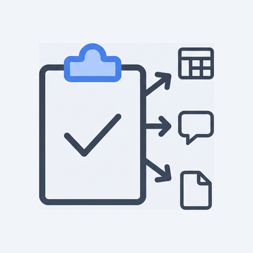

Statements · 非契約 · 読み物
SUGUDASU の約束
SUGUDASU（すぐだす）
30秒で読む要点
登録不要で URL を開き、名簿 · 金額 · 抽選リストはブラウザ内で処理します。 結果は TSV · Slack 用テキスト · PDF へコピーする Copy-first。 統制システムではなく、幹事の説明責任を助ける実務ツールです。
法的な取り扱いは プライバシーポリシー。本ページは製品設計の約束です。情報管理担当の方は 情シス・情報管理向けまとめ からどうぞ。
情報管理・情シス担当向けまとめ
社内規程の最終判断は貴社にお任せします。以下は、SUGUDASU 各ツールの設計意図と、 現場から「外部にデータを送っていないか」を確認するための一次情報です（契約 · 保証ではありません）。
申請メモにそのまま貼れる要約（コピー可）
SUGUDASU は、静的 HTML + JavaScript をブラウザで実行する無料の実務ツール集です。会員登録はありません。
ユーザーが入力・貼り付けした名簿 · 金額 · 画像 · テキスト等を、ツール処理のために当社サーバーへ POST する設計にはしていません。処理の中心は端末内（クライアント）です。結果はコピー · ダウンロードで手元に残します。
ページの初回読込（HTML/JS/CSS）· 広告配信 · アクセス解析 · ホスティングログでは、入力内容とは別の通信が発生しうります（通信レイヤ · プライバシーポリシー）。
本番データの匿名化 · マスキング · エンタープライズ TDM の代替ではありません。ダミーデータ生成専用ツールを含み、実在のマイナンバー · 口座番号は生成しません。
| 観点 | SUGUDASU の設計 |
|---|---|
| 認証 | アカウント登録なし。OAuth · SSO なし |
| 入力データ | 処理目的でのサーバー保存 · POST なし（ツール本体）。ダウンロード後の CSV · PDF 管理は利用者側 |
| 配信形態 | Cloudflare Pages 上の静的ファイル。ユーザーごとの DB · 常時接続サーバーなし |
| 確認方法 | DevTools（Network / Application） で POST の有無を確認可能。初回読込後はキャッシュによりオフラインでも core 機能が動く場合あり |
| 組織の判断 | 未分類ドメインの閲覧可否 · プロキシ · DLP は貴社ポリシー次第。本ページは技術説明であり、利用承認の代わりにはなりません |
説明しやすい一言（例）
- 「入力はブラウザ内で処理し、名簿等を当社サーバーに送る設計にはしていない静的 Web ツールです」
- 「F12 → Network で、貼付 · 生成 · 変換の操作時に入力内容を含む POST が出ないことを確認できます」
避けたい表現（誤解を招きます）
- 「完全に安全」「100% 非送信」「情シス承認不要」
- 「本番データを入れても問題ない」「匿名化ツールとして使える」
- 「AI クラウドが個人情報を自動生成する」（当社ツールは該当しませんが、説明がずれます）
SUGUDASU（すぐだす）は、アカウント登録なしで URL を開き、ブラウザだけで使える無料の実務ツール集です。
請求書、班分け、公平抽選、文字列の正規化——用途はバラバラですが、上記サマリーのとおり 名簿を預けず、結果をすぐコピーする 設計を共通の軸にしています。
7つの設計原則
1. 登録不要 — 開いたら、すぐ使えます
メール認証、OAuth、クレジットカードの登録はありません。幹事・店長・フリーランスが 「今この数分」 だけ困っているときに、障壁を置きません。
2. 入力データは、原則ブラウザ内で処理します
請求書の宛名、研修の名簿、抽選リスト——処理の中心はクライアント（あなたのブラウザ） です。「名簿をアップロードしてから班分け」「クラウドに上げてから変換」を デフォルトにしません。
3. 静的配信 — 重いサーバーに頼りません
Cloudflare Pages 上の 静的 HTML + JavaScript で配信します。ユーザーごとの DB、常時接続の同期サーバー、WebSocket ダッシュボードは スコープ外 です。
4. 実務3分 — 1 URL · 1 用途
1つのツールは 1つの幹事の Pain に閉じ込めます。重い設定画面、事前シナリオエディタ、組織アカウント前提のワークフローは 原則しません。

5. Copy-first — 結果は Slack · Excel · PDF へ
画面で見せて終わりではなく、コピーして貼る · 保存する ことを正とします。TSV、Slack 用テキスト、告知ブロック、監査 PDF——次の1クリック までを責務に含めます。Copy-first の流れ · 技術選定
6. 帳票と証跡 — 印刷 · PDF に価値を置きます
請求書 PDF、抽選の証跡、シフト表の印刷——紙とファイルに残る成果物 を想定して設計します。
7. 過剰な断定はしません
景表法の整理、税務計算、懸賞ルール——「合法です」「問題ありません」とは言い切りません。判断材料を出し、最終判断は現場の幹事・法務・専門家に委ねます（免責事項 と整合）。
正直な但し書き — ブラウザから「出る」もの
信頼のため、入力データ以外 に通信が発生しうるものを隠しません。
| 種類 | 内容 |
|---|---|
| ページ配信 | HTML / CSS / JS（CDN · Cloudflare） |
| 広告 · アフィリエイト | Google AdSense、Amazon リンク等（Cookie を使う場合あり） |
| アクセス解析 | 統計化されたアクセス情報（将来 · 方針のみの記載可） |
| インフラログ | IP · UA 等（ホスティング事業者側） |
入力した名簿 · 金額 · 抽選リスト · 生成するダミーデータを、SUGUDASU がサーバーに保存する設計にはしていません。 例外（拡張機能 · ネットワーク機器 · 第三者タグ等）の可能性は プライバシーポリシー に記載しています。
確認のしかた（技術に詳しい方へ）
Network · Application · 機内モードの 3ステップ は、DevTools での確認（Copy-first 技術選定の直後）に詳述しています。通信の種類は 通信レイヤ もご覧ください。
Copy-first の流れ
画面で見せて終わりにせず、次のツールへ渡すまでを1本の流れとして設計しています。
API 自動投稿はしません。幹事が自分で貼ることで、何がどこへ行くかを透明に保ちます。技術選定の詳細
Copy-first の技術選定
非契約 · 読み物。出力形式（TSV / JSON）と、チャット名の列挙の意味をまとめています。
1. なぜ API 連携ではなくコピペか
- Slack / Teams 等への自動投稿 · OAuth はしない（権限審査 · 名簿送信を避ける）
- 幹事がコピー → 貼り付けする流れが、最も透明
- 画面に出るチャット名は貼り付け例であり、提携 · 推奨 · 公式連携ではない
2. なぜ TSV（タブ区切り）か
- 住所 · 備考などカンマを含むデータで、CSV 形式がセル分裂しやすい
- Excel / スプレッドシートへそのまま列として貼れる
- CSV で運用している現場向け — ツールによっては CSV 保存も用意（用途に応じて選択）
3. なぜ JSON か
- サーバーに保存しない代わり、手元に残す再現用ファイル
- シード · 名簿指紋など、あとから同じ結果を説明するため
- 班分けでは PC→スマホ のセッション移行にも使う（同期メモ経由）
列挙するサービス名（Slack · Microsoft Teams · Google Chat · Chatwork · LINE WORKS 等）は貼り付け先の例です。各名称は各社の商標であり、SUGUDASU との提携 · 推奨を意味しません。詳細は プライバシーポリシー もご覧ください。
通信レイヤ — 何がどこまで端末内か
SUGUDASU のツールは、あなたが貼り付けた名簿 · 表 · テキストを 処理のために当社サーバーへ送りません。一方で、Web ページを開くこと自体は インターネット経由です。下の図でレイヤの位置関係を示します。
あなたのブラウザ
レイヤ一覧（表）
| レイヤ | 内容 | 名簿 · 入力データ | 備考 |
|---|---|---|---|
| ① 入力処理 | 貼付 · 抽選 · 分割 · 変換 · 架空データ生成 などツール本体 | 端末内のみ（送信しない） | 結果のコピーはあなたの操作まで。自動アップロードなし。 |
| ② ページ配信 | HTML / JS / CSS の取得 | 対象外 | Cloudflare Pages 等の CDN 経由。初回読込後はキャッシュされやすい。 |
| ③ 広告 | 配信ネットワークによる表示 | 対象外 | ページ閲覧に伴うリクエストは発生しうる。入力内容は広告タグに含めない設計。 |
| ④ 計測 | アクセス解析 | 対象外 | URL · 端末種別など集計用。貼付テキストそのものは送らない。 |
| ⑤ 外部例示 | 説明文内の第三者サービス名 | 対象外 | 「Excel に貼る」等の例。提携 · 連携を意味しません。 |
「プライバシーファースト」と名乗るサービスでも、入力をサーバーに送るものがあります。 幹事の方は、重要データを扱う前に DevTools 手順 で自分のブラウザから確認できます。
参考：「ブラウザ完結」と外部通信が両立しうる理由
「端末内で処理」と言っても、ページの取得や、ツールが明示する 地図表示 · 名前解決 · ユーザー指定 URL への取得など、意図した外部通信を 別途行う設計もあります（当社製品の有無は問いません）。 SUGUDASU のツール本体は、名簿データを処理目的で外部 API に POST しません。 他サービスとの違いは Network 手順 で確認できます。
外部サービスの利用 — 何を · 何のため · 入力データとの関係
このサイトは、皆さまに無料でツールを使い続けていただくために、以下の外部サービスを利用しています。 いずれも、あなたが各ツールに入力・作成した内容（テキスト · 画像 · データ）を送信するものではありません。
| サービス | 何のためか | 入力データ |
|---|---|---|
| Google Analytics（GA4） | どのツールがよく使われているかを把握し、今後の開発の優先順位を決めるため。計測はページの閲覧 · 操作の統計のみです。 | 送信しません |
| Google AdSense（導入予定） | 運営を維持し、今後も無料でツールを提供し続けるための広告収益のため（審査待ち · 未実装の場合があります）。 | 送信しません。表示される広告は入力内容に基づくものではありません。 |
| Google Fonts | サイトの表示品質を保つため。フォント読み込みの際に Google への通信が発生します。 | 送信しません（入力内容とは無関係） |
法的な取り扱いは プライバシーポリシー をご覧ください。本節は製品設計の開示です。
3分で確かめる — 開発者ツールでの確認
すべてのツールは入力内容をサーバーに送信しません。 開発者ツールの Network タブを開いた状態でご利用いただくと、 入力内容を含む外部への送信が発生していないことをご自身で確認できます。 ページ読込 · Google Analytics（GA4）· Google Fonts など、入力内容を含まない通信は別です（下の手順 · 通信レイヤ · 外部サービスの利用）。
-
Network（ネットワーク）
キーボード F12 →「Network」を開き、ツールの主操作を実行します （例: 名簿の貼付 · 抽選 · 班分け · ダミーCSVの生成 · 画像変換 · テキスト整形）。 一覧に 入力内容をボディに含む POST（当社ドメイン以外への送信を含む）が 出ていないか確認してください。ページ読込 · 広告 · 解析用の GET は別レイヤです。
-
Application（アプリケーション）
「Application」→「Local Storage」「Session Storage」を開き、 ツール利用後に名簿の全文が残っていないかを見ます。 SUGUDASU は入力をサーバーに送らない設計ですが、ブラウザや拡張機能の挙動は環境依存です。
-
オフライン（機内モード）
一度ページを開いたあと、機内モードにして core 機能（貼付 · 抽選 · コピー）が 動くか試せます。動作はキャッシュ状態に依存します。確実な検証は①の Network が正本です。
より詳しく Cookie を調べる場合は、Chrome の「プライバシーとセキュリティ」パネルや Privacy Sandbox の監査手順 も参考にできます（計測 Cookie と入力データは別問題です）。
運営の選び方
| 収益（現状） | 無料で利用可能。広告（AdSense）と アフィリエイト（例: ギフト提案） |
| 収益（将来） | Pro 等の有料プラン — 例: 広告非表示 · 証跡 PDF の拡張 · より高度な機能。時期 · 価格は未定 |
| 有料化の線引き | 登録なしで完結する コア実務 を人質にしない。アカウント必須ペイウォールや名簿のクラウド保存は使わない |
| 運営者表記 | 製品と約束を前面に。個人の実名 · 勤務先は公開しない |
| 開発 | 非エンジニア + AI 支援。changelog で変更を公開 |
あえてやらないこと
| やらない | 理由 |
|---|---|
| Zoom / Teams / Slack への 自動 API 連携 | OAuth · 従量 · 幹事の運用負担 |
| アップロード型 をデフォルトにする変換 | 画像変換等は ブラウザ内 で完結 |
| 「AI が最適班を提案」 | 幹事のルールと 説明責任 を優先 |
| 投影ルーレット演出 | 教室向け演出 — 幹事の TSV/Slack が主戦場 |
| アカウント必須のクラウド同期 | 班分け等は セッション JSON + 同期メモ（Google Keep 等）で PC→スマホ |
| 本番データの匿名化 · マスキング | テスト用架空データ生成のみ。実データの仮名化 export は別ツール · 別プロセスの領域 |
| マイナンバー · 実口座の生成 | コンプライアンス上、ダミーでも生成しません（テストデータ） |
| エンタープライズ TDM · 負荷試験基盤 | 大規模 DB マスキング · SQL シード · 百万件生成はスコープ外 |
| 懸賞 · 人事の統制システム | 操作ログ · 権限 · ワークフローは別製品の領域 |
他サービスとの違い — カテゴリ別
SUGUDASU は すべての用途で最適 ではありません。向く場面 で選んでください。製品カテゴリは相互排他です（1ツールは1カテゴリ）。
ツールと約束の対応
入力データを処理目的でサーバーに送らない設計のツール一覧です。カテゴリごとに分けています。詳細 FAQ は各ツールページ下部にあります。
よくある質問
SUGUDASU は本当にデータを送信しませんか？
入力データを SUGUDASU のサーバーに保存する設計にはしていません。 処理はブラウザ内が中心です。一方で、ページ配信 · 広告 · アクセス解析 · インフラログでは通信が発生します。詳細は プライバシーポリシー をご確認ください。
登録不要の班分けツールと、他の無料ツールの違いは？
演出向けルーレットは会場映え、SaaS 型はアカウントと連携が強みです。SUGUDASU は 名簿を貼って TSV/Slack にコピーし、シードで説明できる 幹事向けの事務ツールです。用途が違えば、他サービスの方が適切な場合もあります。
Pro プランや有料版はありますか？
現時点では無料 です（広告 · アフィリエイトで運営）。将来、広告非表示 や より高度な機能 などを含む有料プランを検討する余地はあります。ただし 登録なしで使えるコア を有料の人質にはしない方針です。
社内利用の承認は不要ですか？
当社が「承認不要」とは言いません。 未分類ドメインの閲覧 · 外部 Web ツールの利用可否は、貴社の情報セキュリティポリシーで判断してください。本ページと DevTools 手順 は、現場が情シスへ説明するときの技術根拠としてご利用ください。
本番の顧客データ · 名簿を入力してもよいですか？
想定していません。 班分け · 請求書などは業務データを扱い得ますが、設計上は「預けない」ことを優先しています。テストデータ は架空データの生成専用で、本番の匿名化 · マスキング用途ではありません。実データを扱う場合は、貴社の個人情報保護規程に従ってください。
オフライン · 閉域環境でも使えますか？
初回はページ（HTML/JS）の取得が必要です。一度読み込んだあと、キャッシュが残っていれば機内モードでも core 機能が動く場合があります（環境依存）。インターネット遮断が厳しい現場では、ドメイン自体の閲覧可否がボトルネックになることがあります。確実な検証は Network タブ です。